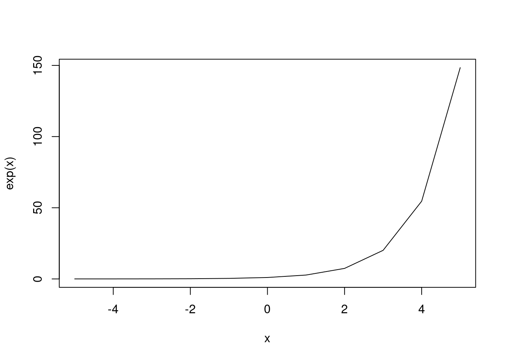
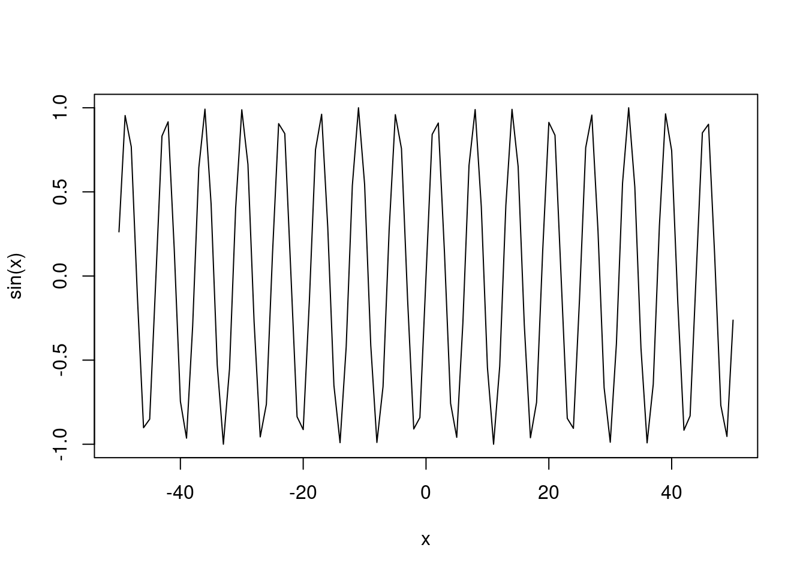

(x <- -5:5) [1] -5 -4 -3 -2 -1 0 1 2 3 4 5In the Section 1.4, we discussed about different types of R objects. For example, a vector can be a certain data type with a set number of elements. Here we construct a vector called x increasing from -5 to 5 by one unit:
(x <- -5:5) [1] -5 -4 -3 -2 -1 0 1 2 3 4 5The vector x has 11 elements. If I want to know what the 6th element of x, I can index the 6th element from a vector. To do this, we use [] square brackets on x to index it. For example, we index the 6th element of x:
x[6][1] 0When ever we use [] next to an R object, it will print out the data to a specific value inside the square brackets. We can index an R object with multiple values:
x[1:3][1] -5 -4 -3x[c(3,9)][1] -3 3Notice how the second line uses the c(). This is necessary when we want to specify non-contiguous elements. Now let’s see how we can index a matrix
# Control Flow: if else statements
x <- rnorm(1)
## Logical Statements
x > 0 [1] TRUE## if statements
if (x > 0) {
print("Positive")
} [1] "Positive"## else statements
if (x > 0){
print("Positive")
} else {
print("Non-Positive")
}[1] "Positive"## Example 2
y <- rnorm(1)
if (y > 0){
print("Positive")
print(y)
mean(y)
} else {
print("Non-Positive")
print(y)
length(y)
}[1] "Non-Positive"
[1] -0.3040218[1] 1# Control Flow: else if statements
(x <- sample(-1:1,1))[1] 0## Logical Statements
x > 0 [1] FALSE## if statements
if (x > 0) {
print("Positive")
}
## else if statements
if (x > 0) {
print("Positive")
} else if (x < 0) {
print("Negative")
} else {
print("Zero")
}[1] "Zero"## Example 2
y <- sample(-1:1,1)
if (y > 0){
print("Positive")
} else if (y < 0) {
print("Negative")
} else {
print("Zero")
}[1] "Positive"# Control Flow: break & next function -----
## Function
err_fx <- function(x){
if (x>0){
return(x)
} else {
stop("x is not positive")
}
}
(y <- rnorm(1))[1] 0.5147466# err_fx(y)
## Loop Example
x <- rnorm(100)
loop <- c()
for (i in seq_along(x)) {
try_err <- try(err_fx(x[i]), silent = T)
if (inherits(try_err, "try-error")){
loop[i] <- 0
} else {
loop[i] <- try_err
}
}
## Break -----
x <- rnorm(100)
loop <- c()
for (i in seq_along(x)) {
try_err <- try(err_fx(x[i]), silent = T)
if (inherits(try_err, "try-error")){
break
} else {
loop[i] <- try_err
}
}
## Next -----
x <- rnorm(100)
loop <- c()
for (i in seq_along(x)) {
try_err <- try(err_fx(x[i]), silent = T)
if (inherits(try_err, "try-error")){
next
} else {
loop[i] <- try_err
}
}
x <- rnorm(100)
loop <- c()
for (i in seq_along(x)) {
try_err <- try(err_fx(x[i]), silent = T)
if (inherits(try_err, "try-error")){
next
} else {
loop <- c(loop, try_err)
}
}# Control Flow: try function -----
## Function
err_fx <- function(x){
if (x>0){
return(x)
} else {
stop("x is not positive")
}
}
## Example -----
(y <- rnorm(1))[1] 0.4741427# err_fx(y)
## try function ----
y_err <- try(err_fx(y), silent = T)
## Example ----
# x <- rnorm(100)
# loop <- c()
# for (i in x){
# loop[i] <- err_fx(i)
# }
## Using try
x <- rnorm(100)
loop <- c()
for (i in seq_along(x)) {
try_err <- try(err_fx(x[i]), silent = T)
if (inherits(try_err, "try-error")){
loop[i] <- 0
} else {
loop[i] <- try_err
}
}# Control Flow: Loops ----
# Loops are used to conduct repetitive/iterative tasks
# Each iteration conducts a task given a set of values
# The values for each iteration change as the loop moves
# from one iteration to another
## for Anatomy -----
# for (i in vector) {
# Perform Task
# }
## Printing Example ------
### print number 1 through 5, separately
# We want to do this:
print(1); print(2); print(3); print(4); print(5)[1] 1[1] 2[1] 3[1] 4[1] 5# We don't want this:
print(1:5)[1] 1 2 3 4 5### Using a loop
for (i in 1:5){
print(i)
}[1] 1
[1] 2
[1] 3
[1] 4
[1] 5## Printing Letters -----
### Print all the letters, seperately
print(letters) [1] "a" "b" "c" "d" "e" "f" "g" "h" "i" "j" "k" "l" "m" "n" "o" "p" "q" "r" "s"
[20] "t" "u" "v" "w" "x" "y" "z"for (i in 1:26){
print(letters[i])
}[1] "a"
[1] "b"
[1] "c"
[1] "d"
[1] "e"
[1] "f"
[1] "g"
[1] "h"
[1] "i"
[1] "j"
[1] "k"
[1] "l"
[1] "m"
[1] "n"
[1] "o"
[1] "p"
[1] "q"
[1] "r"
[1] "s"
[1] "t"
[1] "u"
[1] "v"
[1] "w"
[1] "x"
[1] "y"
[1] "z"## cleaner
for (i in seq_along(letters)){
print(letters[i])
}[1] "a"
[1] "b"
[1] "c"
[1] "d"
[1] "e"
[1] "f"
[1] "g"
[1] "h"
[1] "i"
[1] "j"
[1] "k"
[1] "l"
[1] "m"
[1] "n"
[1] "o"
[1] "p"
[1] "q"
[1] "r"
[1] "s"
[1] "t"
[1] "u"
[1] "v"
[1] "w"
[1] "x"
[1] "y"
[1] "z"## cleanest
for (i in letters){
print(i)
}[1] "a"
[1] "b"
[1] "c"
[1] "d"
[1] "e"
[1] "f"
[1] "g"
[1] "h"
[1] "i"
[1] "j"
[1] "k"
[1] "l"
[1] "m"
[1] "n"
[1] "o"
[1] "p"
[1] "q"
[1] "r"
[1] "s"
[1] "t"
[1] "u"
[1] "v"
[1] "w"
[1] "x"
[1] "y"
[1] "z"# Control Flow: Nested Loops ----
library(greekLetters)
letters_new <- letters[1:3]
greek_lower <- greek_vector[1:24]
paste(letters_new[1], greek_lower[1], sep = "")[1] "aα"paste(letters_new[1], greek_lower[2], sep = "")[1] "aβ"paste(letters_new[2], greek_lower[1], sep = "")[1] "bα"paste(letters_new[2], greek_lower[2], sep = "")[1] "bβ"paste(letters_new[3], greek_lower[1], sep = "")[1] "cα"paste(letters_new[3], greek_lower[2], sep = "")[1] "cβ"## Inefficient way
for(i in greek_lower){
print(paste(letters_new[1], i, sep = ""))
}[1] "aα"
[1] "aβ"
[1] "aγ"
[1] "aδ"
[1] "aε"
[1] "aζ"
[1] "aη"
[1] "aθ"
[1] "aι"
[1] "aκ"
[1] "aλ"
[1] "aμ"
[1] "aν"
[1] "aξ"
[1] "aο"
[1] "aπ"
[1] "aρ"
[1] "aσ"
[1] "aτ"
[1] "aυ"
[1] "aφ"
[1] "aχ"
[1] "aψ"
[1] "aω"for(i in greek_lower){
print(paste(letters_new[2], i, sep = ""))
}[1] "bα"
[1] "bβ"
[1] "bγ"
[1] "bδ"
[1] "bε"
[1] "bζ"
[1] "bη"
[1] "bθ"
[1] "bι"
[1] "bκ"
[1] "bλ"
[1] "bμ"
[1] "bν"
[1] "bξ"
[1] "bο"
[1] "bπ"
[1] "bρ"
[1] "bσ"
[1] "bτ"
[1] "bυ"
[1] "bφ"
[1] "bχ"
[1] "bψ"
[1] "bω"for(i in greek_lower){
print(paste(letters_new[3], i, sep = ""))
}[1] "cα"
[1] "cβ"
[1] "cγ"
[1] "cδ"
[1] "cε"
[1] "cζ"
[1] "cη"
[1] "cθ"
[1] "cι"
[1] "cκ"
[1] "cλ"
[1] "cμ"
[1] "cν"
[1] "cξ"
[1] "cο"
[1] "cπ"
[1] "cρ"
[1] "cσ"
[1] "cτ"
[1] "cυ"
[1] "cφ"
[1] "cχ"
[1] "cψ"
[1] "cω"for (i in 1:3){
for (ii in greek_lower){
print(paste(letters_new[i], ii, sep = ""))
}
}[1] "aα"
[1] "aβ"
[1] "aγ"
[1] "aδ"
[1] "aε"
[1] "aζ"
[1] "aη"
[1] "aθ"
[1] "aι"
[1] "aκ"
[1] "aλ"
[1] "aμ"
[1] "aν"
[1] "aξ"
[1] "aο"
[1] "aπ"
[1] "aρ"
[1] "aσ"
[1] "aτ"
[1] "aυ"
[1] "aφ"
[1] "aχ"
[1] "aψ"
[1] "aω"
[1] "bα"
[1] "bβ"
[1] "bγ"
[1] "bδ"
[1] "bε"
[1] "bζ"
[1] "bη"
[1] "bθ"
[1] "bι"
[1] "bκ"
[1] "bλ"
[1] "bμ"
[1] "bν"
[1] "bξ"
[1] "bο"
[1] "bπ"
[1] "bρ"
[1] "bσ"
[1] "bτ"
[1] "bυ"
[1] "bφ"
[1] "bχ"
[1] "bψ"
[1] "bω"
[1] "cα"
[1] "cβ"
[1] "cγ"
[1] "cδ"
[1] "cε"
[1] "cζ"
[1] "cη"
[1] "cθ"
[1] "cι"
[1] "cκ"
[1] "cλ"
[1] "cμ"
[1] "cν"
[1] "cξ"
[1] "cο"
[1] "cπ"
[1] "cρ"
[1] "cσ"
[1] "cτ"
[1] "cυ"
[1] "cφ"
[1] "cχ"
[1] "cψ"
[1] "cω"for (i in letters_new){
for (ii in greek_lower){
print(paste(i, ii, sep = ""))
}
}[1] "aα"
[1] "aβ"
[1] "aγ"
[1] "aδ"
[1] "aε"
[1] "aζ"
[1] "aη"
[1] "aθ"
[1] "aι"
[1] "aκ"
[1] "aλ"
[1] "aμ"
[1] "aν"
[1] "aξ"
[1] "aο"
[1] "aπ"
[1] "aρ"
[1] "aσ"
[1] "aτ"
[1] "aυ"
[1] "aφ"
[1] "aχ"
[1] "aψ"
[1] "aω"
[1] "bα"
[1] "bβ"
[1] "bγ"
[1] "bδ"
[1] "bε"
[1] "bζ"
[1] "bη"
[1] "bθ"
[1] "bι"
[1] "bκ"
[1] "bλ"
[1] "bμ"
[1] "bν"
[1] "bξ"
[1] "bο"
[1] "bπ"
[1] "bρ"
[1] "bσ"
[1] "bτ"
[1] "bυ"
[1] "bφ"
[1] "bχ"
[1] "bψ"
[1] "bω"
[1] "cα"
[1] "cβ"
[1] "cγ"
[1] "cδ"
[1] "cε"
[1] "cζ"
[1] "cη"
[1] "cθ"
[1] "cι"
[1] "cκ"
[1] "cλ"
[1] "cμ"
[1] "cν"
[1] "cξ"
[1] "cο"
[1] "cπ"
[1] "cρ"
[1] "cσ"
[1] "cτ"
[1] "cυ"
[1] "cφ"
[1] "cχ"
[1] "cψ"
[1] "cω"# for (i in vector) {
# for (ii in vector) {
# for (iii in vector) {
# for (iiii in vector) {
#
# }
# }
# }
# }# Control Flow: Loops ----
# for (i in vector) {
# Perform Task
# }
## Vector construction -----
# x²
### Method 1
x <- rnorm(1000)
x^2 [1] 8.088035e-01 7.461944e+00 2.387508e-02 1.524234e+00 1.397788e-01
[6] 3.998254e+00 8.146790e-02 1.451066e+00 4.745419e-01 1.317897e+00
[11] 3.013561e+00 1.194035e-01 4.933630e-04 1.275896e-03 5.310734e-01
[16] 1.698750e+00 3.974878e-03 8.672063e-01 2.547313e-01 1.357995e+00
[21] 4.899767e-01 2.632160e-02 2.375378e-04 1.190829e+00 2.099435e-03
[26] 7.070989e-01 6.040997e-01 3.138557e-01 2.068725e+00 9.931446e-01
[31] 3.217507e-01 1.102493e-03 2.104981e-02 1.759485e+00 9.886395e-02
[36] 8.411642e-01 4.105202e-01 2.904765e+00 5.839472e-02 5.134429e-01
[41] 2.862696e+00 5.218509e+00 3.989547e-03 1.067586e+00 4.465019e-02
[46] 5.615507e+00 4.870875e-01 1.003306e-01 2.483872e-01 8.546565e-02
[51] 5.738356e-02 2.588448e-01 8.363654e-01 2.310674e+00 9.086216e-02
[56] 6.619932e-01 6.447750e-01 4.191721e-01 4.654650e-01 4.523129e-01
[61] 1.019988e+00 2.393532e+00 1.076937e+00 1.114441e-01 7.087951e-01
[66] 2.736059e-03 2.262108e-01 7.322977e-01 7.809435e-02 8.322901e-01
[71] 1.240957e-02 1.504768e-01 1.254677e+00 1.428228e+00 6.544666e-01
[76] 1.546787e-03 5.824575e-01 4.564580e-01 1.782005e+00 2.966310e-02
[81] 1.074542e-01 7.546225e-01 3.179229e-02 1.131690e-05 7.787739e-01
[86] 6.396054e-02 2.722861e-01 9.895748e-02 6.454833e-02 4.064785e+00
[91] 1.453685e-01 5.470436e-01 1.703475e+00 1.306434e-02 1.140446e-03
[96] 2.813879e+00 1.546922e+00 5.511515e-01 1.675213e-04 9.034462e-04
[101] 3.264953e+00 7.312243e-01 5.483137e-01 1.748277e+00 3.153079e-01
[106] 5.802118e-01 5.816208e-01 3.982214e-02 7.983366e-05 9.867065e-02
[111] 4.223613e-04 1.722304e-01 1.913755e-02 1.031373e-01 9.218402e-04
[116] 3.176565e-05 3.260261e+00 1.037141e+00 9.986931e-02 1.355488e+00
[121] 4.988454e-01 1.085004e+00 6.271842e-01 5.081881e-02 8.167317e-01
[126] 3.734796e-01 6.872328e+00 6.065855e-02 4.693125e-01 7.330770e-04
[131] 1.204065e+00 6.754477e-01 3.468041e+00 1.914433e-02 9.166026e-03
[136] 3.796345e-03 2.315869e+00 1.781652e-02 2.888359e+00 1.489442e+00
[141] 9.449641e-01 2.199790e-02 1.533239e-02 1.753574e+00 1.904937e-01
[146] 6.326164e-02 8.191073e-01 5.182291e-03 2.338838e-01 5.108731e-01
[151] 4.575936e+00 2.407052e-02 1.882769e-01 4.655113e+00 6.579871e+00
[156] 7.731608e+00 4.220518e-01 1.472024e-01 1.760684e-01 5.390840e-01
[161] 2.078860e-01 2.444424e-01 8.614856e-02 1.200347e+00 2.518898e-02
[166] 6.325258e-02 1.623339e-01 6.813615e-02 4.391209e-01 8.666366e-01
[171] 7.118915e-01 2.255321e-01 7.787945e-01 6.180311e-01 4.161036e+00
[176] 5.835504e-03 6.265164e+00 1.879196e-01 1.137172e-01 4.593070e-01
[181] 5.169564e-02 7.156958e-01 1.714028e+00 9.309960e-01 1.924729e-01
[186] 1.181367e-01 6.930302e-03 7.399585e-02 1.579113e+00 1.558866e+00
[191] 1.443875e+00 3.487111e-03 6.137694e-01 3.723749e+00 7.976249e-03
[196] 9.467919e-02 2.364236e-01 8.309452e-02 1.665791e-02 3.948361e-03
[201] 1.419547e-01 1.714360e+00 8.127024e-01 2.049589e-03 4.348210e+00
[206] 5.049624e-02 1.321238e-01 4.626818e-04 1.933744e-02 7.672096e-02
[211] 4.934835e-01 3.844669e-02 6.477444e-04 4.634674e-01 7.338447e-01
[216] 7.627124e-01 2.259626e-01 3.109156e-01 1.125534e+00 3.691678e+00
[221] 1.021412e-02 1.467329e+00 4.728242e-02 6.574741e-02 2.172659e-03
[226] 4.435547e-01 1.455882e-01 4.150752e-02 5.052579e-01 3.597121e+00
[231] 1.206710e+00 3.353988e-02 2.632300e+00 1.398838e-02 9.049415e-01
[236] 2.140014e-01 1.586848e-01 1.562410e-04 6.102811e-01 9.959418e-01
[241] 8.742099e+00 1.808940e-01 3.409437e+00 2.674809e-02 7.087271e+00
[246] 1.014076e-01 4.789014e-01 2.148240e-01 1.786600e-02 8.533344e-01
[251] 2.460327e+00 1.112992e+00 3.668999e-02 1.338374e+00 2.796867e+00
[256] 2.640780e+00 2.650845e-02 7.550729e-01 5.385353e-04 2.881944e+00
[261] 1.025409e+00 1.735873e+00 1.385681e-02 3.780516e-01 6.868404e-01
[266] 1.333216e+00 2.380584e-01 7.915553e-02 2.785355e-02 9.921636e-01
[271] 4.821679e-01 2.974322e-04 6.649921e-01 7.593516e-01 3.834402e-02
[276] 1.661520e+00 1.671396e+00 1.531594e+00 1.031973e-01 1.675581e+00
[281] 1.366703e+00 1.437762e+00 2.403797e-01 2.966091e-02 1.393079e+00
[286] 1.082050e+00 1.463833e+00 1.265663e+00 9.992710e+00 6.288567e-02
[291] 6.666260e-01 1.439430e+00 6.885336e-01 5.326352e-01 4.997897e+00
[296] 7.202427e-02 1.703627e+00 4.769196e-02 9.498728e-01 9.649597e-02
[301] 1.569720e-01 4.473758e-02 9.951389e-01 6.965528e-01 8.697914e-01
[306] 1.621036e-02 1.089560e-01 2.645237e+00 6.713538e-02 8.292272e-01
[311] 2.734114e-01 8.260376e-02 3.329114e-01 7.843983e-01 9.497375e-02
[316] 4.563060e-01 4.014399e-02 5.878724e-01 5.361494e-03 3.371407e-01
[321] 5.047787e-01 5.027521e-02 2.125908e-01 1.520655e+00 1.087274e+00
[326] 1.947636e+00 1.879892e-01 7.083193e-01 4.643761e-01 2.600080e+00
[331] 2.208054e+00 5.290033e-01 2.511474e-01 2.507069e+00 9.059041e-01
[336] 2.095793e+00 1.226364e+00 1.823852e+00 5.190729e-02 8.216910e-01
[341] 4.807807e-01 3.507952e-01 1.060248e-02 7.832721e-03 9.877578e+00
[346] 1.413951e+00 1.316791e+00 5.513077e-02 8.695738e-02 5.953378e+00
[351] 2.695756e+00 2.092291e-05 5.182381e-01 9.503283e-02 2.230196e-01
[356] 2.744644e+00 4.152694e-01 3.946171e-02 3.798009e+00 3.979613e-03
[361] 2.578872e-01 2.844624e+00 2.194908e+00 5.261898e-01 9.965913e-01
[366] 1.792481e+00 2.256992e+00 1.873562e-01 1.291990e+00 7.815675e-02
[371] 1.723587e+00 2.267550e-01 2.754178e+00 5.901911e-01 5.204091e-02
[376] 7.675271e-01 3.924761e-01 6.699156e-02 1.006418e+00 5.265004e-01
[381] 4.594133e-01 1.156093e+00 7.880273e-01 1.569091e+00 5.976356e-01
[386] 2.743065e-01 1.551657e-01 9.636263e-01 1.263884e-02 1.273607e-01
[391] 9.219617e-02 3.455652e-01 2.070748e-01 2.055707e+00 1.174277e-01
[396] 1.706036e-01 1.307665e+00 1.514324e+00 1.148535e-01 4.014062e-01
[401] 1.204995e-02 5.847591e+00 4.263946e+00 7.241711e-03 2.053762e+00
[406] 1.378084e+00 2.796254e-01 5.643482e-01 6.674015e-02 9.616927e-01
[411] 3.453080e-02 6.708891e-01 1.255827e-01 2.157450e-01 5.799182e-01
[416] 1.069158e+00 7.157607e-01 1.728843e+00 9.226033e-02 3.602413e-02
[421] 2.446916e-01 1.924981e+00 4.405396e-01 1.074433e-01 4.809584e-01
[426] 1.420917e-02 8.129028e-01 1.032077e+00 2.527490e+00 2.936360e-02
[431] 1.579255e+00 6.747730e-01 4.371858e-01 1.083151e+00 2.418114e+00
[436] 7.209828e-01 1.856799e+00 1.032982e+00 2.087111e+00 2.422039e-01
[441] 1.257101e+00 9.330294e-02 8.486959e-02 1.633728e+00 2.916103e-01
[446] 7.363754e-01 9.428372e-03 2.618189e+00 2.498003e-01 4.032993e-03
[451] 5.855340e-02 8.908231e-01 7.747087e-01 3.323340e-02 1.905351e-01
[456] 1.714024e-01 1.589856e+00 1.629367e-01 2.379070e+00 7.953274e-01
[461] 1.900368e-01 2.418310e+00 2.799118e+00 3.131258e-01 1.282074e-01
[466] 1.119925e+00 2.005772e-03 3.013041e-03 5.957638e-01 9.712082e-01
[471] 3.763164e-01 1.799495e+00 1.163104e-01 3.123426e+00 3.030867e+00
[476] 1.226540e-01 5.949946e-01 3.339226e-01 2.669335e-02 1.191311e+00
[481] 4.406291e-01 4.715074e-01 3.069830e+00 8.689152e-01 3.528060e-03
[486] 5.123111e-02 2.995675e-01 3.171609e-01 7.498361e-01 2.651883e-01
[491] 2.380997e+00 2.697520e-01 9.336444e-01 4.190091e-01 1.949593e-01
[496] 3.870038e-01 7.259194e-02 9.711826e-03 2.687199e-02 2.013815e+00
[501] 2.249804e-01 1.438971e-01 3.505414e-03 6.293732e+00 4.508494e-02
[506] 5.890476e-02 3.971423e-01 4.987074e-01 2.175989e-02 8.967618e-02
[511] 9.651927e+00 2.047721e+00 2.256003e-05 3.130213e+00 6.750162e-01
[516] 1.298215e+00 3.723489e-01 1.200002e-03 3.229367e-01 9.762342e-01
[521] 8.130433e-01 2.020103e-02 2.144566e-03 3.029956e-01 2.403078e-01
[526] 7.645817e-02 1.281754e-02 1.110770e+00 2.597639e-03 3.207218e-02
[531] 2.304505e+00 3.152402e-01 1.793262e-01 4.049022e-02 1.143607e+00
[536] 5.156243e-01 1.697157e-01 9.212235e-01 6.350172e-01 8.179763e-04
[541] 2.746180e-02 4.152348e-01 3.685520e-01 6.880160e-02 3.887625e+00
[546] 2.005731e+00 2.633653e+00 6.676454e-02 3.166354e-01 1.514304e-01
[551] 3.261654e+00 6.944017e-01 2.928692e-01 7.559454e-01 1.353865e-01
[556] 2.866445e-01 9.797860e-02 1.516431e+00 2.257553e-01 2.525530e+00
[561] 7.898169e+00 1.437830e+00 1.627525e+00 3.323891e+00 2.782944e-01
[566] 1.669800e-01 2.299208e+00 6.681008e-01 1.045929e-01 3.596579e-03
[571] 1.015720e-01 1.040813e+00 1.368596e-01 2.185635e+00 9.292936e-01
[576] 1.824756e+00 5.865435e-02 2.573247e-02 7.660932e+00 6.877749e-01
[581] 1.772152e-03 7.240028e-02 2.198115e+00 8.030260e-01 4.372489e-02
[586] 1.488424e-02 2.258528e+00 2.118307e-01 6.925752e-01 2.334615e-01
[591] 8.192180e-02 6.336455e-01 1.912640e-03 2.583046e-01 4.805891e-02
[596] 2.139281e+00 2.601501e-01 8.774056e-01 1.418170e-01 9.149773e-02
[601] 7.126417e-01 2.371198e+00 7.086247e-03 2.140504e-01 2.281260e+00
[606] 4.138452e-02 3.656839e-01 2.371014e-01 3.119877e+00 1.010614e+00
[611] 1.181508e+00 2.854032e-01 4.573710e+00 2.395392e-01 3.079464e+00
[616] 1.054311e+00 3.991429e-03 3.163096e-01 1.585366e-01 6.515480e-03
[621] 1.188265e+00 3.102186e-01 1.252560e-01 3.147514e-03 4.987217e+00
[626] 1.413499e-02 4.783619e+00 5.640947e-01 4.141798e+00 1.233148e+00
[631] 3.772864e-01 4.599052e-02 2.803763e+00 8.159279e-02 4.896703e-02
[636] 4.561143e-01 1.091490e+00 8.065412e-01 1.144368e-01 6.720369e-01
[641] 6.474885e-03 3.389334e+00 1.437629e+00 2.527698e+00 1.221768e-02
[646] 6.010805e-02 1.338978e-01 6.294378e-01 2.458378e-01 1.357052e-02
[651] 2.962917e+00 8.572974e-01 1.761655e-01 1.561516e+00 9.434128e-01
[656] 8.112940e-01 6.754532e-01 7.665912e-02 6.732563e-01 7.961907e-03
[661] 7.377961e-01 4.058869e-01 1.405360e-02 5.330423e-01 4.497931e-05
[666] 3.558933e+00 2.236290e+00 1.609746e-03 2.071181e+00 3.349265e-02
[671] 7.443633e-03 3.697695e+00 2.909025e-01 2.370936e+00 1.992988e-01
[676] 1.979658e+00 7.247604e-03 8.338878e-01 4.158310e-04 1.145641e-01
[681] 6.029193e-02 4.251044e-01 3.144179e-01 8.900481e-01 9.272361e-03
[686] 1.238453e+00 7.574325e-01 1.122617e-02 1.759691e+00 4.311343e-02
[691] 9.834317e-02 1.089930e+00 3.878899e-01 2.703015e+00 6.714246e-01
[696] 4.652366e-01 6.478109e-01 1.944706e+00 1.039161e+00 1.627890e+00
[701] 1.860546e-01 5.024468e+00 2.380931e-02 2.718150e+00 4.807100e-01
[706] 7.239982e-01 7.082563e-03 9.015430e-01 3.688434e-01 9.133525e-01
[711] 1.762899e-01 6.435599e-02 3.265548e-02 3.868603e+00 1.982892e-01
[716] 2.881168e+00 5.483811e-04 3.008548e-01 5.282808e-01 2.275475e+00
[721] 4.527024e-01 1.761489e+00 1.556155e+00 5.246508e-01 4.847844e-01
[726] 9.676643e-02 2.569042e-04 9.207086e-01 2.402932e-02 3.872104e-01
[731] 9.117456e-01 2.153053e+00 7.758175e-01 1.945046e-01 1.759999e-01
[736] 1.575289e+00 1.426672e-01 4.444688e-03 7.389555e-01 4.751089e-01
[741] 4.686266e-01 1.371541e-01 2.854104e-01 1.323267e+00 2.121478e+00
[746] 6.004310e-02 9.772894e-01 4.218289e+00 6.804759e-01 4.961058e-01
[751] 1.189278e-01 2.517871e-01 1.137294e-01 1.745107e+00 3.582043e+00
[756] 1.009343e+00 1.068506e+00 1.253526e+00 8.215775e-01 5.019881e-01
[761] 8.748284e-01 7.138758e-01 2.548199e+00 5.016925e-02 1.727598e+00
[766] 4.346171e-01 1.972527e+00 1.086392e+00 3.210117e-01 1.216111e-01
[771] 1.989966e-02 4.601403e+00 8.806839e-02 3.789221e-02 3.200368e-01
[776] 4.326305e+00 2.381720e-02 7.488477e-02 1.018176e+00 4.628346e-01
[781] 2.153894e+00 7.190626e-03 2.530771e-02 7.420590e-01 2.842596e-03
[786] 2.014528e-01 2.770969e-02 3.321002e+00 2.946410e-02 4.328511e-01
[791] 3.766710e+00 2.140177e-03 1.330193e-01 1.800133e-01 1.406729e+00
[796] 1.526388e+00 6.519783e-01 7.299150e-01 2.160415e+00 4.309739e-02
[801] 1.056389e+00 8.125855e-02 2.314066e-05 7.428762e-02 5.969480e-01
[806] 1.737658e+00 1.303043e-01 9.256878e-01 7.598243e-01 7.185301e-02
[811] 4.709338e-01 1.837062e-01 2.269579e+00 7.058691e-01 1.949777e+00
[816] 1.016700e+00 1.347194e-02 1.605624e+00 2.874463e-01 6.645447e-01
[821] 3.259998e-01 2.196528e-01 1.238599e+00 6.211683e-01 1.758934e-01
[826] 1.147910e-03 1.025513e-01 1.299964e-01 3.510001e-01 1.651452e+00
[831] 2.252441e-01 7.382179e-01 4.571178e-01 3.909432e-01 2.212200e-01
[836] 2.286824e-01 1.087507e-01 2.408614e-01 5.754001e-03 4.672482e+00
[841] 4.284557e-02 1.967134e-01 5.048851e+00 2.176141e+00 1.455612e-01
[846] 2.420963e-01 3.275095e+00 2.518645e-01 1.430114e+00 3.934566e+00
[851] 1.258663e+00 1.036972e+00 7.932658e-02 9.324290e-02 5.694011e-01
[856] 7.552711e-01 9.897406e-01 1.990187e+00 1.829913e+00 5.113006e-01
[861] 2.623161e+00 1.346163e+00 5.864037e+00 2.078251e+00 4.033985e+00
[866] 5.822908e-01 1.245862e-02 1.158277e+00 8.685276e-02 2.157221e-01
[871] 1.109935e-02 4.988322e-01 1.855566e+00 1.091745e-01 6.421236e-01
[876] 2.517160e+00 1.822108e+00 2.393500e+00 4.585300e+00 7.988036e-01
[881] 2.441360e-02 4.263627e+00 7.471952e-02 1.167555e-01 1.615012e-01
[886] 1.156947e-01 1.056135e-01 1.079899e+00 1.300684e+00 2.055429e-01
[891] 9.883689e-01 1.070639e+00 6.508012e-02 3.970252e-01 1.567267e+00
[896] 5.149058e-01 1.722601e+00 9.160778e-01 8.946997e-01 1.795616e+00
[901] 4.109752e+00 3.353131e-01 3.321361e-01 6.709583e-01 1.642390e-01
[906] 4.290342e-01 6.125382e-01 2.976231e-01 6.793227e+00 6.460885e-01
[911] 2.301692e-03 4.136311e-03 2.966086e-01 6.455821e-01 4.009884e-01
[916] 1.857166e+00 2.824769e-01 4.518881e-01 1.717462e-02 5.441113e-01
[921] 4.590644e-01 4.904879e-03 4.178567e-01 8.315256e-01 4.090126e-02
[926] 1.702801e-01 1.990073e+00 4.703581e-02 6.787876e-01 3.834593e-02
[931] 6.093001e-03 3.656726e-01 4.543193e-01 1.033338e+00 6.405099e-01
[936] 1.930888e-01 3.088230e+00 5.164585e-01 5.174845e-01 7.568668e-01
[941] 5.416826e-02 1.837625e-01 4.780393e-02 1.669975e+00 1.956078e+00
[946] 6.954850e-01 5.011656e-01 2.914148e-04 4.769504e+00 1.028385e-03
[951] 8.387440e-02 8.833448e-01 1.246160e+00 8.315710e-01 2.012943e+00
[956] 2.028176e+00 1.101611e+00 4.588012e-01 3.693802e-01 9.943997e-01
[961] 3.210568e-01 1.064095e+00 5.615141e-01 2.520187e+00 1.204125e+00
[966] 3.363187e-02 1.794772e+00 1.147313e+00 2.701325e+00 4.313986e-02
[971] 2.086716e-02 2.758177e-01 6.728794e-01 5.110936e-01 7.844307e-01
[976] 4.743687e-01 8.567791e-02 6.323287e-01 2.098212e+00 5.178548e-02
[981] 5.476121e+00 3.882651e+00 1.102260e+00 5.812036e-01 1.363059e-02
[986] 1.193411e+00 1.405785e+00 3.010077e-01 3.877888e+00 1.098440e-02
[991] 2.458503e+00 7.790674e-02 1.535483e+00 1.856003e+00 2.271173e-01
[996] 1.959730e+00 1.467976e+00 6.326318e-01 1.908039e-01 1.399306e-02output <- c()
for (i in seq_along(x)){
output <- c(output, x[i]^2)
}
### Method 2
x <- rnorm(1000)
output <- c()
for (i in seq_along(x)){
output[i] <- x[i]^2
}
### Method 3
x <- rnorm(1000)
output <- vector(length = length(x))
for (i in seq_along(x)){
output[i] <- x[i]^2
}# Control Flow: While Loops -----
x <- -5:5
plot(x, exp(x), type = "l")
## Asymptotic -----
abs(exp(-14)-exp(-13))[1] 1.428801e-06## while statements -----
# while (condition) {
#
# }
## while loops ----
x <- 1
diff <- 1
while (diff > 1e-20) {
old_x <- x
x <- x - 1
diff <- abs(exp(x) - exp(old_x))
}
print(x)[1] -47print(diff)[1] 6.65662e-21# Control Flow: Infinite While Loops -----
(y <- rnorm(1))[1] -0.7446324z <- as.integer(2)
# logical operator &
is.integer(z) & z > 0[1] TRUEis.integer(y) & y > 0[1] FALSEx <- -50:50
plot(x, sin(x), type = "l")
## Asymptotic -----
abs(exp(13)-exp(12))[1] 279658.6## inf while loops ----
x <- 1
diff <- 1
# while (diff > 1e-20) {
# old_x <- x
# x <- x + 1
# diff <- abs(exp(x) - exp(old_x))
# }
print(x)[1] 1print(diff)[1] 1# x <- 1
# diff <- 1
# while (diff > 1e-20) {
# old_x <- x
# x <- x + 1
# diff <- abs(sin(x) - sin(old_x))
# }
# print(x)
# print(diff)
## while loops ----
x <- 1
counter <- 0
diff <- 1
while (diff > 1e-20 & counter < 30) {
old_x <- x
x <- x + 1
diff <- abs(exp(x) - exp(old_x))
counter <- counter + 1
}
print(x)[1] 31print(diff)[1] 1.836238e+13print(counter)[1] 30x <- 1
counter <- 0
diff <- 1
while (diff > 1e-20 & counter < 10^3) {
old_x <- x
x <- x + 1
diff <- abs(sin(x) - sin(old_x))
counter <- counter + 1
}
print(x)[1] 1001print(diff)[1] 0.09311106print(counter)[1] 1000